with
with Stone's theorem
Let  ,
,
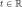
, be unitary with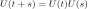
and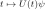
continuous for every (Stone 1932). Then there is a unique self-adjoint
(Stone 1932). Then there is a unique self-adjoint  with , defined by the spectral theorem, and (von Neumann 1931)
Conversely each self-adjoint generates such a group. Hence: unitary time evolution ⇔ self-adjoint
with , defined by the spectral theorem, and (von Neumann 1931)
Conversely each self-adjoint generates such a group. Hence: unitary time evolution ⇔ self-adjoint  ; unitary translations ⇔ self-adjoint
; unitary translations ⇔ self-adjoint  .
.
Proof idea
Converse:
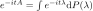
is unitary and continuous by dominated convergence. Direct: as defined is symmetric; its domain is dense because the smoothed vectors 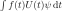
,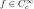
, lie in it; deficiency indices vanish because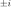
eigenvectors of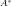
would grow like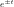
under a unitary group.Weyl relations and uniqueness
cannot hold for bounded operators (take traces in finite dimension:
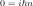
). The Weyl form avoids domains: with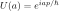
,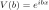
,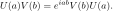
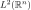
with multiplication and
multiplication and 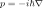
. Heisenberg's matrices and Schrödinger's waves are the same theory.Worked example
Translations on
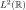
: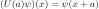
is strongly continuous; its generator is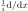
on the Sobolev space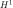
, i.e.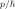
. The harmonic-oscillator ladder representation is equivalent to it via Hermite functions.Engineering applications
Pitfall
Formal commutators on a common domain do not imply the Weyl relations (Nelson's counterexamples); uniqueness needs the exponentiated form.